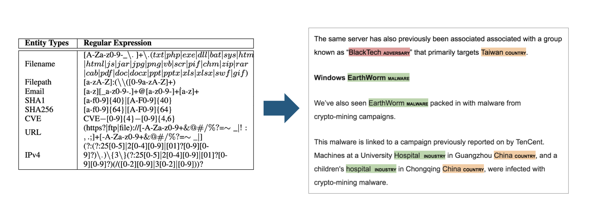
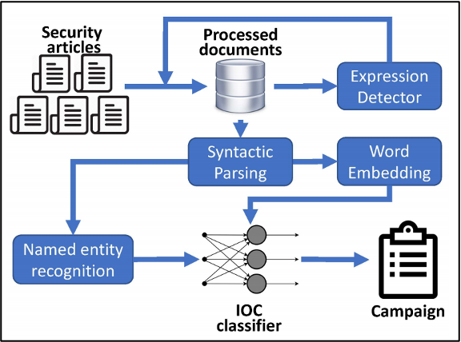
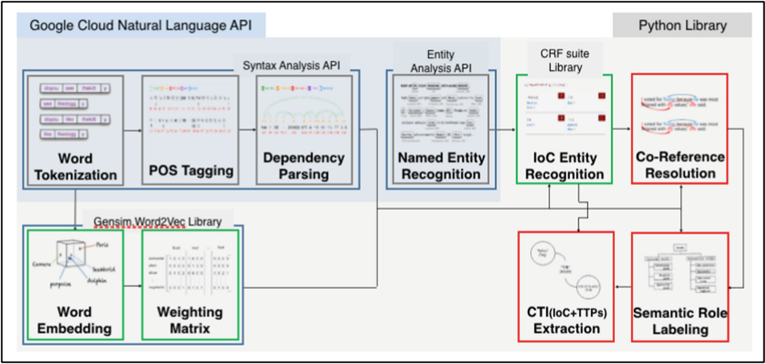
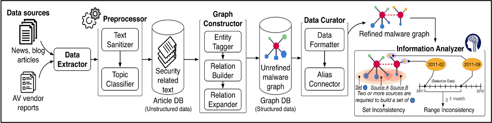
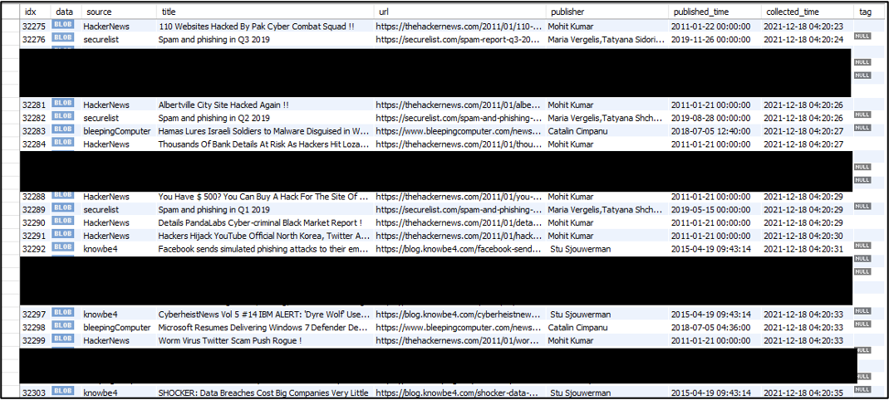
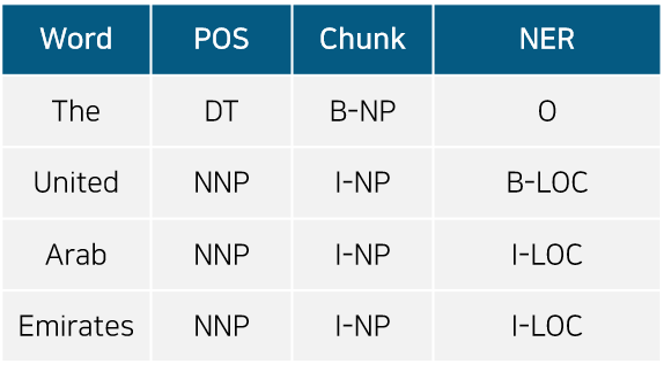
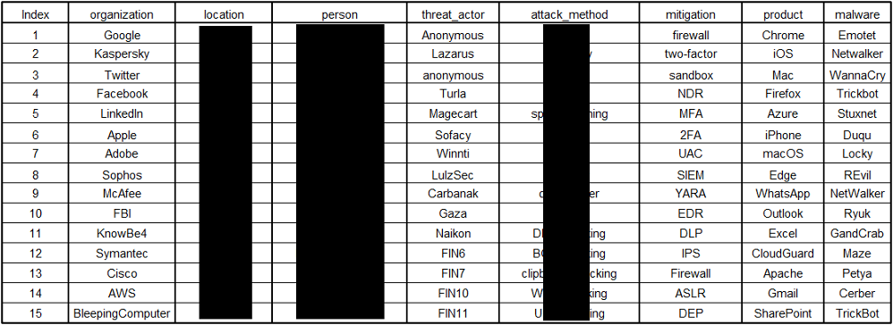
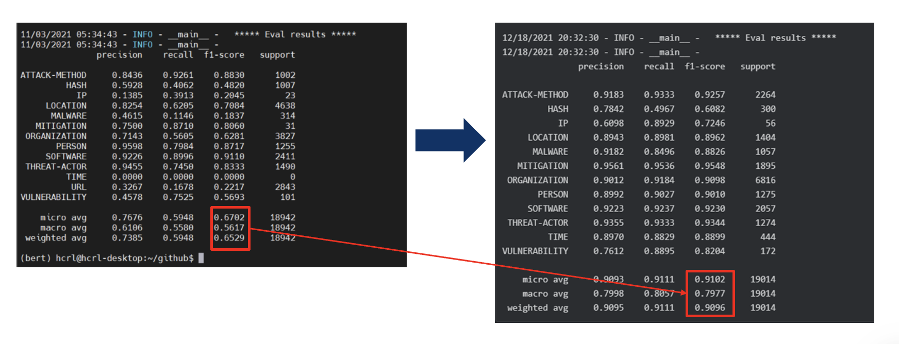

Security analysts drown in unstructured threat reporting. This project, done with Samsung SDS, aimed to extract structured threat entities (IOCs like hashes, IPs, and CVEs, plus threat actors, malware, and mitigations) automatically from that flood of text.
I built 30+ crawlers to pull 50,000+ security articles into MySQL, constructed a BIO-tagged domain-specific dictionary from scratch, and fine-tuned a PyTorch BERT-NER model, pushing weighted F1 from 65% to 91% after a round of cleaning up mislabeled training data.

From fixed regex patterns per IOC type to a model that recognizes entities in contextThe starting point was pattern matching: a regular expression per IOC type (filename, hash, CVE, URL, IPv4). That catches well-formed indicators but misses everything regex can't express, like which adversary group, country, or industry a report is actually describing. The goal was to replace that with a named entity recognition model that reads the sentence instead of just scanning for a shape.

Prior work — syntactic parsing + word embedding feeding an NER-based IOC classifier
Prior work — combining a cloud NLP API with a CRF-based IOC recognizer for full CTI (IOC + TTP) extraction
Prior work — building a malware relationship graph from raw articles, then cross-checking sources for consistency
30+ crawlers feeding a MySQL table — source, title, URL, publisher, and both published and collected timestamps
BIO tagging scheme — B-LOC/I-LOC spans marking a multi-word location entity
Domain dictionary built from scratch across 8 entity categories, used to bootstrap BIO labeling
Per-entity precision/recall/F1, before (left) and after (right) cleaning mislabeled training dataThe biggest single jump came from classes that were badly mislabeled early on. MALWARE went from an F1 of 0.18 to 0.88 and IP from 0.20 to 0.72 once the training labels were actually correct, a bigger gain than any change to the model itself produced.